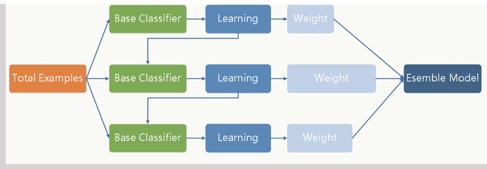
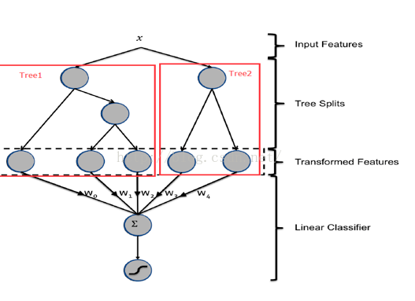

[toc]
Reference：
https://www.cnblogs.com/ModifyRong/p/7744987.html
residual 残差
GBDT - Gradient Boosting Decision Tree
DT-- 决策树
特点： 可以做分类和回归，分类速度快，可以可视化 缺点：容易过拟合
Boosting
在分类问题中，它通过改变训练样本的权重（增加分错样本的权重，减小分队样本的的权重），学习多个分类器，并将这些分类器线性组合，提高分类器性能。
Boosting 是一族可将弱学习器提升为强学习器的算法，属于集成学习（ensemble learning）的范畴。Boosting 方法基于这样一种思想：对于一个复杂任务来说，将多个专家的判断进行适当的综合所得出的判断，要比其中任何一个专家单独的判断要好。通俗地说，就是"三个臭皮匠顶个诸葛亮"的道理。
基于梯度提升算法的学习器叫做 GBM(Gradient Boosting Machine)。理论上，GBM 可以选择各种不同的学习算法作为基学习器。GBDT 实际上是 GBM 的一种情况。
Gradient Boosting
Gradient Boosting是一种Boosting方法，主要思想是：每一次建立模型是在之前建立模型损失函数的梯度下降方向。损失函数是评价模型性能(一般为拟合程度+正则项)，认为损失函数越小，性能越好。让损失函数持续下降，就能使模型不断改进提升性能，最好的方法就是使损失函数沿着梯度方向下降。
GBDT introduction

gbdt训练过程
gbdt通过多轮迭代,每轮迭代产生一个弱分类器，每个分类器在上一轮分类器的残差基础上进行训练。对弱分类器的要求一般是足够简单，并且是低方差和高偏差的。因为训练的过程是通过降低偏差来不断提高最终分类器的精度
弱分类器一般会选择为CART TREE（也就是分类回归树）
$$ $$
Fm−1(x) 为当前的模型，gbdt 通过经验风险极小化来确定下一个弱分类器的参数。具体到损失函数本身的选择也就是L的选择，有平方损失函数，0-1损失函数，对数损失函数等等。如果我们选择平方损失函数，那么这个差值其实就是我们平常所说的残差
GBDT key points
- 希望loss_f 能够不断减小，沿着剃度方向
- 希望loss_f 能够尽快的减小
利用损失函数的负梯度在当前模型的值作为回归问题提升树算法中的残差的近似值去拟合一个回归树。gbdt 每轮迭代的时候，都去拟合损失函数在当前模型下的负梯度。 这样每轮训练的时候都能够让损失函数尽可能快的减小，尽快的收敛达到局部最优解或者全局最优解
GBDT如何选择特征
gbdt的弱分类器默认选择的是CART TREE。其实也可以选择其他弱分类器的，选择的前提是低方差和高偏差。框架服从boosting 框架即可
下面我们具体来说CART TREE(是一种二叉树) 如何生成。CART TREE 生成的过程其实就是一个选择特征的过程。假设我们目前总共有 M 个特征。第一步我们需要从中选择出一个特征 j，做为二叉树的第一个节点。然后对特征 j 的值选择一个切分点 m. 一个 样本的特征j的值 如果小于m，则分为一类，如果大于m,则分为另外一类。如此便构建了CART 树的一个节点。其他节点的生成过程和这个是一样的。现在的问题是在每轮迭代的时候，如何选择这个特征 j,以及如何选择特征 j 的切分点 m:
- 原始的gbdt的做法非常的暴力，首先遍历每个特征，然后对每个特征遍历它所有可能的切分点，找到最优特征 m 的最优切分点 j。
- 如何衡量我们找到的特征 m和切分点 j 是最优的呢？ 我们用定义一个函数 FindLossAndSplit 来展示一下求解过程：
1
2
3
4
5
6
7
8
9
10
11
12
13
14
15
16
17
18
19
20
21
22
23
24
25
26
27
28
29
30
31
32
33
34
35
36
37def findLossAndSplit(x,y):
# 我们用 x 来表示训练数据
# 我们用 y 来表示训练数据的label
# x[i]表示训练数据的第i个特征
# x_i 表示第i个训练样本
# minLoss 表示最小的损失
minLoss = Integet.max_value
# feature 表示是训练的数据第几纬度的特征
feature = 0
# split 表示切分点的个数
split = 0
# M 表示 样本x的特征个数
for j in range(0,M):
# 该维特征下，特征值的每个切分点，这里具体的切分方式可以自己定义
for c in range(0,x[j]):
L = 0
# 第一类
R1 = {x|x[j] <= c}
# 第二类
R2 = {x|x[j] > c}
# 属于第一类样本的y值的平均值
y1 = ave{y|x 属于 R1}
# 属于第二类样本的y值的平均值
y2 = ave{y| x 属于 R2}
# 遍历所有的样本，找到 loss funtion 的值
for x_1 in all x
if x_1 属于 R1：
L += (y_1 - y1)^2
else:
L += (y_1 - y2)^2
if L < minLoss:
minLoss = L
feature = i
split = c
return minLoss,feature ,split
gbdt如何构建特征

迭代几次，就会产生几棵树
我们 使用 GBDT 生成了两棵树，两颗树一共有五个叶子节点。我们将样本 X 输入到两颗树当中去，样本X 落在了第一棵树的第二个叶子节点，第二颗树的第一个叶子节点，于是我们便可以依次构建一个五纬的特征向量，每一个纬度代表了一个叶子节点，样本落在这个叶子节点上面的话那么值为1，没有落在该叶子节点的话，那么值为 0.
于是对于该样本，我们可以得到一个向量[0,1,0,1,0] 作为该样本的组合特征，和原来的特征一起输入到逻辑回归当中进行训练。实验证明这样会得到比较显著的效果提升。
GBDT vs xGboost
Xgboost 和 GBDT 的区别：
GBDT：
GBDT 它的非线性变换比较多，表达能力强，而且不需要做复杂的特征工程和特征变换。 GBDT 的缺点也很明显，Boost 是一个串行过程，不好并行化，而且计算复杂度高，同时不太适合高维稀疏特征； 传统 GBDT 在优化时只用到一阶导数信息。 Xgboost：
它有以下几个优良的特性：
- 显示的把树模型复杂度作为正则项加到优化目标中。
- 公式推导中用到了二阶导数，用了二阶泰勒展开。（GBDT 用牛顿法貌似也是二阶信息）
- 实现了分裂点寻找近似算法。
- 利用了特征的稀疏性。
- 数据事先排序并且以 block 形式存储，有利于并行计算。
- 基于分布式通信框架 rabit，可以运行在 MPI 和 yarn 上。（最新已经不基于 rabit 了）
- 实现做了面向体系结构的优化，针对 cache 和内存做了性能优化。